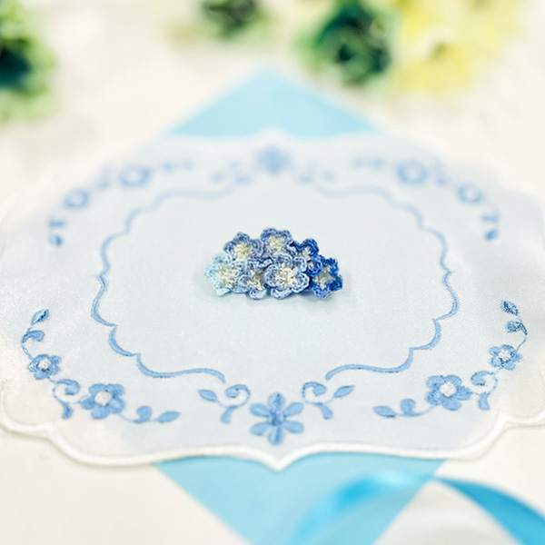
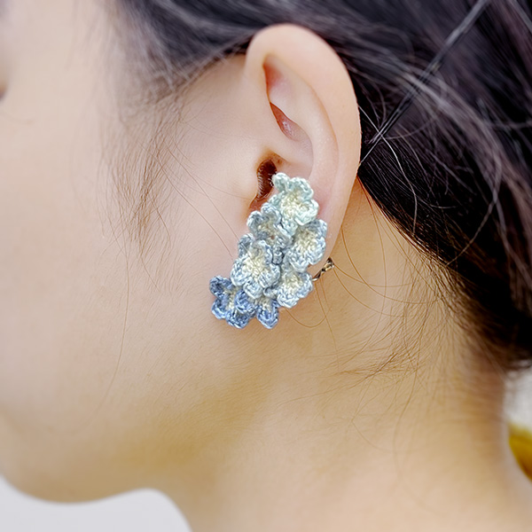

アクセサリー


種類（サイズ）：片耳イヤリング（長辺：4.5cm）
材料：刺繍糸【221、524、526、163】、イヤリング台（三角バネ式 スカシ付）

種類（サイズ）：片耳イヤリング（長辺：4.5cm）
材料：刺繍糸【221、524、526、163】、イヤリング台（三角バネ式 スカシ付）
思いついたら即行動、元気が有り余る社会人2年目の女の子。 仕事でミスが多いが持ち前のコミュ力で無双している。 アイドルグループ『Nautis（ノーティス）』に属している「ネモ」を推している。 ライブに参加した時は近くの人に声をかけ写真を撮ってもらい、隣席の人に即座に 話しかけ仲良くなるタイプの行動力のあるオタク。
サイズ（用紙）：145×215mm
材料：厚紙、オーロララミネートシール
ぼくには、忘れられない人がいる。
「すみません！ 写真、撮ってもらっても大丈夫ですか？」
雲ひとつない青空と、青い花の海。ぼくの心と正反対なほど強い日差しに気が滅入りそうだったとき、そんな明るい声が飛び込んできた。
「……いいですけど」
差し出されたカメラを受け取りながら、なんでぼくに？と思ったのを覚えている。
「ありがとうございます！ この子と撮りたくて……」
そう言いながら彼女は透明なポーチの中から人形を取り出した。彼女の耳についている、この青い海を切り取ったかのようなアクセサリーと揃いの花で飾られている。
「じゃあ撮りますね……」
声をかけつつ、カメラを彼女に向けた。瞬間、レンズの向こうに笑顔が咲く。
「はい、チーズ」
あまりにも眩しくて、ちょっとだけ焦ってシャッターを押した。
けれど、一瞬の間ののち、写ったのは、残したかった笑顔そのもので。
「え、すごい！とてもお上手ですね！？ありがとうございます！貴方に頼んでよかった！」
その一言で、ぼくの前に道が開けた気がした。
……彼女の写真は、手元にはない。
でも、あの笑顔だけは、言葉だけは。やりたいことを見つけた今でも、鮮やかに思い出せるんだ。
制作者コメントはこちら